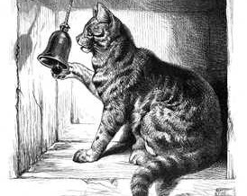

<!DOCTYPE html>
<html>
  <head>
    <title>2750E - SDT</title>
    <script src="https://ajax.googleapis.com/ajax/libs/jquery/3.4.1/jquery.min.js"></script>
	<script src="https://unpkg.com/jspsych@7.3.0"></script>
	<script src="https://unpkg.com/@jspsych/plugin-animation@1.1.1"></script>
	<script src="https://unpkg.com/@jspsych/plugin-audio-button-response@1.1.1"></script>
	<script src="https://unpkg.com/@jspsych/plugin-audio-keyboard-response@1.1.1"></script>
	<script src="https://unpkg.com/@jspsych/plugin-audio-slider-response@1.1.1"></script>
	<script src="https://unpkg.com/@jspsych/plugin-browser-check@1.1.1"></script>
	<script src="https://unpkg.com/@jspsych/plugin-call-function@1.1.1"></script>
	<script src="https://unpkg.com/@jspsych/plugin-canvas-button-response@1.1.1"></script>
	<script src="https://unpkg.com/@jspsych/plugin-canvas-keyboard-response@1.1.1"></script>
	<script src="https://unpkg.com/@jspsych/plugin-canvas-slider-response@1.1.1"></script>
	<script src="https://unpkg.com/@jspsych/plugin-categorize-animation@1.1.1"></script>
	<script src="https://unpkg.com/@jspsych/plugin-categorize-html@1.1.1"></script>
	<script src="https://unpkg.com/@jspsych/plugin-categorize-image@1.1.1"></script>
	<script src="https://unpkg.com/@jspsych/plugin-cloze@1.1.1"></script>
	<script src="https://unpkg.com/@jspsych/plugin-external-html@1.1.1"></script>
	<script src="https://unpkg.com/@jspsych/plugin-free-sort@1.1.1"></script>
	<script src="https://unpkg.com/@jspsych/plugin-fullscreen@1.1.1"></script>
	<script src="https://unpkg.com/@jspsych/plugin-html-audio-response@1.1.1"></script>
	<script src="https://unpkg.com/@jspsych/plugin-html-button-response@1.1.1"></script>
	<script src="https://unpkg.com/@jspsych/plugin-html-keyboard-response@1.1.1"></script>
	<script src="https://unpkg.com/@jspsych/plugin-html-slider-response@1.1.1"></script>
	<script src="https://unpkg.com/@jspsych/plugin-html-video-response@1.1.1"></script>
	<script src="https://unpkg.com/@jspsych/plugin-iat-html@1.1.1"></script>
	<script src="https://unpkg.com/@jspsych/plugin-iat-image@1.1.1"></script>
	<script src="https://unpkg.com/@jspsych/plugin-image-button-response@1.1.1"></script>
	<script src="https://unpkg.com/@jspsych/plugin-image-keyboard-response@1.1.1"></script>
	<script src="https://unpkg.com/@jspsych/plugin-image-slider-response@1.1.1"></script>
	<script src="https://unpkg.com/@jspsych/plugin-initialize-camera@1.1.1"></script>
	<script src="https://unpkg.com/@jspsych/plugin-initialize-microphone@1.1.1"></script>
	<script src="https://unpkg.com/@jspsych/plugin-instructions@1.1.1"></script>
	<script src="https://unpkg.com/@jspsych/plugin-maxdiff@1.1.1"></script>
	<script src="https://unpkg.com/@jspsych/plugin-mirror-camera@1.1.1"></script>
	<script src="https://unpkg.com/@jspsych/plugin-preload@1.1.1"></script>
	<script src="https://unpkg.com/@jspsych/plugin-reconstruction@1.1.1"></script>
	<script src="https://unpkg.com/@jspsych/plugin-resize@1.1.1"></script>
	<script src="https://unpkg.com/@jspsych/plugin-same-different-html@1.1.1"></script>
	<script src="https://unpkg.com/@jspsych/plugin-same-different-image@1.1.1"></script>
	<script src="https://unpkg.com/@jspsych/plugin-serial-reaction-time@1.1.1"></script>
	<script src="https://unpkg.com/@jspsych/plugin-serial-reaction-time-mouse@1.1.1"></script>
	<script src="https://unpkg.com/@jspsych/plugin-sketchpad@1.1.1"></script>
	<script src="https://unpkg.com/@jspsych/plugin-survey-html-form@1.1.1"></script>
	<script src="https://unpkg.com/@jspsych/plugin-survey-likert@1.1.1"></script>
	<script src="https://unpkg.com/@jspsych/plugin-survey-multi-choice@1.1.1"></script>
	<script src="https://unpkg.com/@jspsych/plugin-survey-multi-select@1.1.1"></script>
	<script src="https://unpkg.com/@jspsych/plugin-survey-text@1.1.1"></script>
	<script src="https://unpkg.com/@jspsych/plugin-video-button-response@1.1.1"></script>
	<script src="https://unpkg.com/@jspsych/plugin-video-keyboard-response@1.1.1"></script>
	<script src="https://unpkg.com/@jspsych/plugin-video-slider-response@1.1.1"></script>
	<script src="https://unpkg.com/@jspsych/plugin-virtual-chinrest@1.1.1"></script>
	<script src="https://unpkg.com/@jspsych/plugin-visual-search-circle@1.1.1"></script>
	<script src="https://unpkg.com/@jspsych/plugin-video-button-response@1.1.1"></script>
	<script src="https://unpkg.com/@jspsych/plugin-webgazer-calibrate@1.1.1"></script>
	<script src="https://unpkg.com/@jspsych/plugin-webgazer-init-camera@1.1.1"></script>
	<script src="https://unpkg.com/@jspsych/plugin-webgazer-validate@1.1.1"></script>

    <link href="https://unpkg.com/jspsych@7.3.0/css/jspsych.css" rel="stylesheet" type="text/css" />

  </head>
    <body>
      <script>


//Define timeline and overarching variables
var jsPsych = initJsPsych({on_finish: function(){jsPsych.data.get().localSave('csv','mydata-sdt.csv');}}); //initialize jsPsych before loading any js modules that depend on it!
var timeline = []; //specify the jsPsych timeline to which all trials/blocks are pushed
var audNum = 1; //counter for auditory trials
var subjID = jsPsych.randomization.randomID(15); //random alphanumeric identifier


//INTRODUCTION / INSTRUCTIONS
var welcome_01 = {
	type:jsPsychHtmlButtonResponse,
	stimulus: '<p style="color:#e31838;"><b>Psychophysics Demonstration - Signal Detection Theory</b></p>' +
			  '<p>This mini-study will give you a first-hand feel for <em><b>signal detection theory</b></em>.</p>' +
			  '<p>To receive more specific instructions, press the button below.</p>',
	choices: ['Continue'],
	post_trial_gap: 250
};


//AUDITORY SDT TASK
//variables for tallying performance
var audHIT = 0;
var audCR = 0;
var audFA = 0;
var audMISS = 0;
var respType;


//Image preloading
var preload_aud = [
'aud/00/01.wav', 'aud/00/02.wav', 'aud/00/03.wav', 'aud/00/04.wav', 'aud/00/05.wav', 'aud/00/06.wav', 'aud/00/07.wav', 'aud/00/08.wav', 'aud/00/09.wav', 'aud/00/10.wav',
'aud/00/11.wav', 'aud/00/12.wav', 'aud/00/13.wav', 'aud/00/14.wav', 'aud/00/15.wav', 
'aud/05/01.wav', 'aud/05/02.wav', 'aud/05/03.wav', 'aud/05/04.wav', 'aud/05/05.wav', 'aud/05/06.wav', 'aud/05/07.wav', 'aud/05/08.wav', 'aud/05/09.wav', 'aud/05/10.wav',
'aud/05/11.wav', 'aud/05/12.wav', 'aud/05/13.wav', 'aud/05/14.wav', 'aud/05/15.wav', 
'aud/doorbell.wav', 'aud/calibration.wav'
];

var preload_files = {
	type: jsPsychPreload,
	audio: preload_aud,
	continue_after_error: false,
	message: `Loading...`
};

//Timeline Variables
var aud_SDT_vars = [
{stim: preload_aud[0], type: 'noise', corRESP: 0},
{stim: preload_aud[1], type: 'noise', corRESP: 0},
{stim: preload_aud[2], type: 'noise', corRESP: 0},
{stim: preload_aud[3], type: 'noise', corRESP: 0},
{stim: preload_aud[4], type: 'noise', corRESP: 0},
{stim: preload_aud[5], type: 'noise', corRESP: 0},
{stim: preload_aud[6], type: 'noise', corRESP: 0},
{stim: preload_aud[7], type: 'noise', corRESP: 0},
{stim: preload_aud[8], type: 'noise', corRESP: 0},
{stim: preload_aud[9], type: 'noise', corRESP: 0},
{stim: preload_aud[10], type: 'noise', corRESP: 0},
{stim: preload_aud[11], type: 'noise', corRESP: 0},
{stim: preload_aud[12], type: 'noise', corRESP: 0},
{stim: preload_aud[13], type: 'noise', corRESP: 0},
{stim: preload_aud[14], type: 'noise', corRESP: 0},
{stim: preload_aud[15], type: 'signal_05', corRESP: 1},
{stim: preload_aud[16], type: 'signal_05', corRESP: 1},
{stim: preload_aud[17], type: 'signal_05', corRESP: 1},
{stim: preload_aud[18], type: 'signal_05', corRESP: 1},
{stim: preload_aud[19], type: 'signal_05', corRESP: 1},
{stim: preload_aud[20], type: 'signal_05', corRESP: 1},
{stim: preload_aud[21], type: 'signal_05', corRESP: 1},
{stim: preload_aud[22], type: 'signal_05', corRESP: 1},
{stim: preload_aud[23], type: 'signal_05', corRESP: 1},
{stim: preload_aud[24], type: 'signal_05', corRESP: 1},
{stim: preload_aud[25], type: 'signal_05', corRESP: 1},
{stim: preload_aud[26], type: 'signal_05', corRESP: 1},
{stim: preload_aud[27], type: 'signal_05', corRESP: 1},
{stim: preload_aud[28], type: 'signal_05', corRESP: 1},
{stim: preload_aud[29], type: 'signal_05', corRESP: 1},
];


var aud_welcome = {
	type: jsPsychHtmlButtonResponse,
	stimulus: '<p style="color:#e31838;"><b>Auditory Signal Detection Task: The Doorbell Game</b></p>' +
			  '<p></p><br>' + 	
			  '<p><em>You are a world-famous sensation and perception researcher and, to your delight, <b>Cat Fancy Magazine</b> wants to interview you about the visual acuity of cats! (Life goal: achieved.)</p>' +
			  '<p>However, Cat Fancy is very old school. They insist on sending out a reporter to interview you in person. The interviewer is to arrive at 9 AM.<br>Alas, you miss your alarm the morning of the interview and wake up at 8:40 AM</p>' +
			  '<p>You want to take a shower before the interview but worry that you will miss the ring of the doorbell from the interviewer. So, you decide to shower but keep an ear open for the sound of the doorbell.<br>In this task, you will hear 30 total sounds, and it is your job to determine whether you hear the faint ring of a doorbell amid the shower noise.</p></em>',
	choices: ['Begin'],
	post_trial_gap: 250
};


//Counter
var aud_counter = {
	type: jsPsychHtmlButtonResponse,
	stimulus: function(){return '<p>Sound '+audNum+' of 30</p>';},
	choices: ['Listen'],
	post_trial_gap: 250,
	data: {modality: 'auditory'},
	on_finish: function(){
		audNum += 1;
	}
};


//Sound presentation, decision
var aud_decision = {
	type: jsPsychAudioButtonResponse,
	stimulus: jsPsych.timelineVariable('stim'),
	choices: ['<p>No doorbell...<br><b>no rush.</b></p>', '<p>Doorbell...<br><b>interview time!</b></p>'],
	data: {correct_response: jsPsych.timelineVariable('corRESP'), modality: 'auditory', type: jsPsych.timelineVariable('type')},
	on_finish: function(data){		
		var decision = jsPsych.data.get().last(1).values()[0].response; //0 or 1 depending on the button pressed
		//caculate SDT statistics
		if(decision == data.correct_response && (data.type == 'signal_05')){
			audHIT += 1;
			respType = 'H';
			} else if(decision == data.correct_response && data.type == 'noise') {
			audCR += 1;
			respType = 'CR';
			} else if(decision != data.correct_response && data.type == 'noise') {
			audFA += 1;
			respType = 'FA';
			} else {
			audMISS += 1;
			respType = 'M';
			}
		jsPsych.data.addDataToLastTrial({
			designation: "sdt-auditory",
			RESP: respType		
		});		
	}
};


var main_aud_proc = {
	timeline: [aud_counter, aud_decision],
	timeline_variables: aud_SDT_vars,
	randomize_order: true
}; 

//variables for representing the percentages of hits/false alarms/misses/correct rejects

var audHITp;
var audMISSp;
var audCRp;
var audFAp;

//Wrap-Up  and Visualization

var goodbye = {
    type: jsPsychHtmlButtonResponse,
    stimulus: "This concludes the mini-study.",
	choices: ['See my results'],
	on_finish: function(data){
		//establish the final tallies for SDT across visual/auditory tasks, append to data as 'SUMMARY'
		
		audHITp = ((audHIT/15) * 100).toFixed(2);
		audMISSp = ((audMISS/15) * 100).toFixed(2);
		audCRp = ((audCR/15) * 100).toFixed(2);
		audFAp = ((audFA/15) * 100).toFixed(2);
		
		jsPsych.data.addDataToLastTrial({
			designation: "SUMMARY",
			A_H: audHIT,
			A_M: audMISS,
			A_CR: audCR,
			A_FA: audFA				
		});	
		}
    };

var sum_results = {
	type: jsPsychHtmlKeyboardResponse,
	stimulus: function(){return '<p><b>Auditory Task</b><br><em>Here is how you did listening for the doorbell:</em></p><p><b style="color:green">Hits:</b> '+audHIT+' out of 15 ('+audHITp+'% hit rate).<br><p><b style="color:red">Misses:</b> '+audMISS+' out of 15 ('+audMISSp+'% miss rate).<br><p><b style="color:orange">False Alarms:</b> '+audFA+' out of 15 ('+audFAp+'% false alarm rate).<br> <p><b style="color:#2F899C">Correct Rejections:</b> '+audCR+' out of 15 ('+audCRp+'% correct reject rate).</p>' +
			'<p>(Press s to save your data)</p>';},
	choices: ['s']
};
 
//Push everything to the timeline

	var exp_final = {
		timeline: [preload_files, welcome_01, aud_welcome, main_aud_proc, goodbye, sum_results] // timelime 
		};

timeline.push(exp_final); //push the final experiment array to the timeline

jsPsych.run(timeline);
	
    </script>
  </body>
</html>
